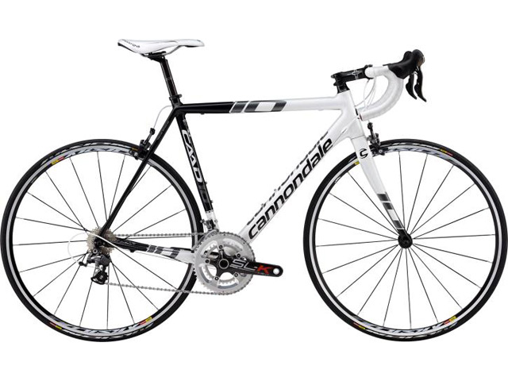
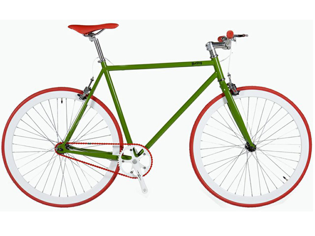

Los diferentes diseños de las bicicletas están basados en su funcionalidad: para que tipo de terreno, desarrollo de velocidad, menor peso o mayor fortaleza, etc. Vamos dar las características de los más usuales para ayudarte a elegir la bicicleta que mejor se adapte a tu persona y necesidades.
Bicicletas de Montaña (MTB)
Las bicicletas de montaña (también conocidas como MTB) están diseñadas para “fuera de ruta” por lo que son bastante resistentes. Están equipadas con llantas anchas con dibujos marcados para mejorar el agarre en terrenos sueltos. Regularmente usan manubrios rectos o de doble altura.
Las MTB se pueden encontrar sin suspensión (rígidas), con suspensión delantera (hardtail) o con doble suspensión (full-suspension) dependiendo de su especialidad:
Cross country
Enduro
Downhill
Freeride

Bicicletas de Ruta
Son bicicletas orientadas a obtener velocidad en pavimento, de construcción más ligera que otras bicicleta, están dotadas con ruedas más grandes, delgadas y provistas de llantas angostas y con dibujo liso. Las bicis de ruta utilizan manubrios drop-bar para lograr una postura más aerodinámica

Bicicletas Híbridas
Las bicicletas híbridas son bastante versátiles ya que combinan características de las bicis de montaña y de las de ruta.Estas bicicletas nacieron como una solución para quienes necesitan una bicicleta para la ciudad, pero que tenga la flexibilidad de ser usada en diferentes terrenos. Los cuadros son resistentes y con una geometría que permite adoptar una posición cómoda que permite relajar los brazos y el cuello.

Bicicletas Urbanas
En este caso nos referimos como bicicleta urbana a las bicis estilo holandés (Dutch).
Estas bicicletas fueron concebidas para la ciudad, por lo que son de construcción bastante solida tanto en su cuadro como en sus ruedas. Están perfectamente adecuadas para soportar las condiciones de una ciudad (baches, banquetas, topes, etc.)
Por lo general cuenta con guardabarros para días de lluvia, portaequipaje y/o canasta para transportar todo lo que necesitas para ir al trabajo, al supermercado, etc. Una característica común en este tipo de bicicletas es la presencia de luces para mantenernos siempre visibles a los conductores.
Normalmente tienen una sola velocidad, o sistema de cambios internos de ser necesario.
Estas bicicletas permiten una posición relajada de torso y brazos.

Bicicletas plegables
La gran mayoría de estas bicicletas usan ruedas pequeñas, siendo 16 y 20″ las más comunes, aunque es posible encontrar plegables con rodados más convencionales. Casi todas las plegables están diseñadas para uso urbano, no obstante existen modelos que aguantan viajes largos sin problemas.
Un inconveniente de de las ruedas pequeñas es que son más sensibles a las imperfecciones del camino, aunque si lo que necesitas es una bici que puedes llevar contigo en todo momento no hay como una plegable.
En general vienen equipadas con 18- 20 cambios.

Fixies y single speed
Si bien su conceptp es el de ser una bicicleta sencilla, se han convertido en algo así como las bicicletas de culto para el ciclismo urbano. Su principal característica es su diseño simple y en muchos casos minimalista, sumamente eficientes y funcionales.
Esta familia de bicis viene en varias formas y estilos; las hay con manubrios rectos, de doble altura, drop bars, bullhorns, etc.
Están equipadas con una sola velocidad por lo que requieren mucho menos mantenimiento que otras bicicletas. La diferencia entre las single-speed y las fixies es que en las single-speed utilizan una rueda libre, mientras que las fixies utilizan un piñón fijo.
Cruisers

Este tipo de bicicletas están diseñadas para trayectos cortos y sobre pavimento preferencialmente. Su geometría y manubrio característico permiten una postura sumamente relajada. Estas bicicletas suelen ser pesadas y usan llantas anchas lo que las hace poco eficientes en trayectos de más de 10km. Normalmente tienen una sola velocidad aunque algunos fabricantes tienen modelos con tres velocidades. Otra característica común en las cruiser son los frenos de contrapedal.

MBX
Las BMX utilizan cuadros pequeños y resistentes, ideales para saltos y acrobacias. Existen diferentes variables de estas bicicletas, algunas con llantas anchas para usarse en terrenos sueltos y otras con llantas un poco más delgadas y lisas para usarse en rampas o en la calle. Estas bicicletas no son eficientes como medio de transporte.

Eléctricas
En la actualidad se puede encontar versiones de pedaleo asistido (eléctricas) de casi cualquier tipo de bicicleta. Las bicicletas eléctricas son todas aquellas bicis que utilizan un motor para asistir el pedaleo. Su principal ventaja es a la hora de subir pendientes, pedalear contra el viento (hay lugares donde el viento es muy intenso) o para quien tiene que pedalear largas distancias para ir al trabajo y quiere reducir el esfuerzo. Por otro lado estas bicis son más costosas y pesadas que el resto.

Bicicletas utilitarias
Al ser utilizadas para mover carga, esta familia de bicis utilizan cuadros sumamente fuertes, con un buen sistema de frenos (frenos de disco, tambor, son comunes) y una relación de velocidades adecuada para mover el peso extra. Existen bicis cargo de diferentes tipos y diferentes capacidades dependiendo de lo que se vaya a mover. Otra variante es el tipo de area de carga y el posicionamiento de la carga:
Sobre la rueda delantera, trasera o ambas
Entre el manubrio y la rueda delantera mejor conocidas como Long John
Detrás del ciclista conocidas como Longtail
Entre ruedas paralelas ya sea delanteras o traseras (triciclos)


 1
1 2
2 6
6 7
7 8
8